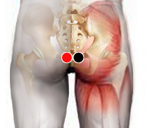

Trastornos renales
Par
cóccix - cóccix *

* Par que ayuda en general para cualquier trastorno en vías urinarias
Generalidades:
La función del sistema urinaro es filtrar la sangre y eliminar las sustancias que el cuerpo no necesita. Está compuesto de dos riñones, ureteros, vejiga y ureter. Existen diversos factores que pueden causar enfermedades renales. Como malos hábitos en la dieta. Exceso de sal, azucar (hiperglucemia), exceso de grasas (hipercolesterolemia), abuso de irritantes (picante, café...), insuficiente ingesta de agua.
Malos hábitos como el sedentarismo predisponen a la diabetes y la obesidad, ambas también afectan el funcionamiento urinario. Incluso se deben considerar los factores genéticos, siempre hay mayor predisposición a padecer este tipo de enfermedades cuando un pariente cercano también las ha presentado.
Todos estos factores crear el terreno que permite la proliferación de diversos agentes patógenos, muchos de las cuales pueden ser tratados exitosamente mediante el biomagnetismo.
Síntomas:
Las enfermedades renales agudas suelen causar síntomas bastante evidentes, como sangre en la orina, hinchazón de cara, pies y piernas, subida de la presión arterial y respiración dificultosa. O bien síntomas inespecíficos como fiebre, debilidad, malestar general, falta de apetito.
Enfermedades:
Enfermedad (insuficiencia) renal crónica: Diversos factores reducen la capacidad de los riñones para hacer sus funciones.
Insuficiencia renal aguda: Puede darse una insuficiencia aguda debido a una lesión o por sustancias tóxicas. Pueden presentarse, tanto la insuficiencia renal crónica, como la aguda, en forma simultánea, comprometiendo aún más la salud del paciente. La hemodiálisis se aplica cuando los riñones son prácticamente incapaces de filtrar la sangre y en esta permanecen diversas sustancias tóxicas (uremia). El trasplante de riñón también es otra opción que brinda buenas expectativas al paciente, el problema es la reducida cantidad de donantes (ya sea vivos o fallecidos)y el gran número de enfermos que lo requieren.
Enfermedad renal hereditaria Un ejemplo de enfermedad crónica hereditaria es la enfermedad renal poliquística (PKD por sus siglas en inglés) . Se han identificado varios genes causantes de la PKD y las leyes de transmisión hereditaria han sido bien definidas. Aparecen quistes llenos de fluidos en los riñones. Estos quistes se pueden detectar a los 20 o 30 años de edad del paciente mediante ultrasonido. Con el tiempo, los quistes crecen y presionan el tejido del riñón, afectando la función renal. Si existen antecedentes familiares de PKD, los parientes e hijos adultos jóvenes de padres afectados deben ser controlados para determinar la presencia de quistes. El control de la hipertensión, una dieta adecuad>a y el tratamiento del sangrado o infección de los quistes pueden disminuir el progreso de la enfermedad.
Glomerulonefritis Trastorno de los glomérulos.
Uretritis: Inflamación e irritación de la uretra (conducto para orinar) esencialmente debido a infecciones, algunas de ellas de transmisión sexual.
Cistitis: Inflamación de la vejiga, a veces se presenta con fiebre alta. Se le llama aguda cuando se presenta en forma súbita y es crónica cuando permanece por un periodo largo de tiempo. Los patógenos que la pueden provocar son: Herpes 5 , Cólera, Varicela, Corona virus, entre otros.
Pielonefritis: Es una infección de las vías urinarias altas (riñones). Generalmente comienza en la vejiga o en órganos sexuales y de ahí se extiende a los riñones, más común en mujeres que en hombres. Diversas infecciones pueden ser la causa, entre otras el Enterobacter cloacae, E-coli, Mycoplasma hominis, Cándida albicans, entre otras. Hacer un rastreo completo. Beber gran cantidad de líquidos.
Agentes causantes
Para tratar las enfermedades renales se deben de considerar especialmente los siguientes pares:
Tóxinas en el riñón frecuentemente medicamentos.
Alex, Provoca disfunción renal:
Microbacterium tuberculosis produce cálculos renales.
Otros patógenos: Herpes 5 , Clamydia trachomatis, Neisseria Gonorreare, Gardenerella vaginalis, VIH 4, Corona virus, Proteus Mirabilis, Rotavirus, Goiz, Varicela, Espreptococo G, Catarro común.